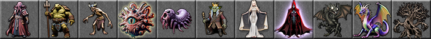

EvilHack
NetHack, but everything wants you dead a little more
> Enter the dungeonLineage
EvilHack is a child of NetHack 3.6. Keith Simpson forked it from the Hardfought server's NetHack 3.6.2 build on 20 October 2018 and opened it for public play on the Hardfought servers in April 2019. It has followed vanilla 3.6 ever since: version 0.9.3 carries NetHack 3.6.7.
Most of its new content is borrowed and reworked from other NetHack variants: GruntHack and SporkHack above all (the two hard variants its name nods to), and pieces of xNetHack, SpliceHack, UnNetHack and Slash'EM, next to a large amount of its own. Its NetHack roots go back through Hack to Rogue. See the family tree.
Credits
| Keith Simpson | Creator and maintainer (k21971); runs the Hardfought servers |
| Borrowed code | GruntHack, SporkHack, xNetHack, SpliceHack, UnNetHack, Slash'EM, NetHack 3.7; patches credited in the changelog to ogmobot, paxed, Nephi, Tomsod, Khor and others |
| NetHack DevTeam | NetHack 3.6.x, the base (Mike Stephenson's team back to 1987; Hack by Jay Fenlason and Andries Brouwer) |
| Tiles | The Absurdly Evil tile set by Lemrent (floor tile by John Shaw), made for EvilHack 0.9.3 (64 px, scaled in the browser); the NetHack 3.6 tile set (Warwick Allison's tiles, extended by the DevTeam) is also included |
| Web port | memmaker (RVIP): browser window port, explore, tiles, sound |
Screenshots



Trivia
- Work began on 20 October 2018; the game opened to the public in April 2019 on the Hardfought NetHack servers. (dat/history)
- The name is a promise: it is meant to be difficult “much like how GruntHack and SporkHack turned out to be (hence the name 'EvilHack')”. (README)
- Its author's profile reads: “I'm not really a programmer, I just play one on TV.” He lives in Vermont and also keeps Hardfought's builds of NetHack 5.0 and xNetHack. (GitHub profile)
- The repository counts more than 14,600 commits. (k21971/EvilHack)
- Releases come with Windows binaries in TTY and GUI form; the author called 0.9.2 “by far the most stable version to date”. (releases)
- Version 0.1.1 already removed the “mysterious force” that drags ascending players back down, and instead spawns nasties at the up stairs while you carry the Amulet. (changelog)
What's unique
- Monsters play like you. Intelligent monsters loot containers, wear what they find, ride steeds, dual-wield, and will zap a wand of wishing if they get one. Many have more hit points and hit harder.
- New races. Fourteen in all: next to the classic five come giants (who toss boulders), centaurs, hobbits, illithids with psychic powers, tortles, drow, draugr and vampires (both undead), and the celestial aasimar.
- New roles. Convict (starts with a ball and chain), Druid (shape-shifting with
#wildshape) and Infidel, a servant of Moloch, join the thirteen classic roles. - Materials and forges. Every item has a material (iron, mithril, silver, bone, …) that changes its damage and protection; some races and monsters hate certain materials. Forges let you dip, repair and even set gems into weapons.
- Less forgiveness. Reflection is only partial, Elbereth has to be learned, the Riders were redone, and a wish tracker remembers what you asked for.
- New places. Goblin Town in the Mines, the Ice Queen's realm, a hidden dungeon, Vecna's domain and Purgatory are branches vanilla NetHack never had.
Code dive
- Language: C (K&R-compatible, like NetHack 3.6): about 295,000 lines in 208 files under
src/andinclude/, plus 20,000 lines of level descriptions in 36dat/*.desfiles compiled bylev_comp. - Biggest files:
mon.c(8,400 lines),zap.candcmd.c(7,500 each). EvilHack's own files includetelekinesis.c(the illithid power),unicode.candextcolor.c(UTF-8 and 256-colour output, new in 0.9.3). - Environment: built for Unix public servers (Hardfought) in the terminal; the Windows TTY and GUI builds come from GitHub Actions.
- Data tables: monsters in
src/monst.c, objects insrc/objects.c, artifacts ininclude/artilist.h, roles and races insrc/role.c, the dungeon indat/dungeon.def. 0.9.3 even raisedLARGEST_INTfrom 32,767 to 2,147,483,647. - This port: a new window port
win/web/winweb.ctalks to the page; the game compiles to WebAssembly with Emscripten, gameplay unchanged (about 2,600 lines changed insrc/,include/andwin/web/). Source: memmaker/evilhack; upstream k21971/EvilHack @ c444f6a; our changes.
Stats
| Thing | Count | Notable ones |
|---|---|---|
| Roles | 16 | Convict, Druid and Infidel next to the classic thirteen; Infidels serve Moloch; the Archbishop of Moloch leads their quest. |
| Races | 14 | Illithid, tortle, draugr, vampire, aasimar, centaur, giant, drow, hobbit. |
| Monsters | 563 | The rodent of unusual size, the honey badger, the gulthias tree, petrified ents, the vorpal jabberwock, the Pale, White, Black and Red Horses, and Kathryn the Ice Queen, with a second entry as Kathryn the Enchantress. |
| Objects | 565 | 81 weapons, 55 tools, 43 scrolls, 30 rings, 29 potions, 27 wands. |
| Spellbooks | 62 | Druid spells such as entangle and create grass; barkskin and stoneskin. |
| Artifacts | 69 | The Magic 8-Ball, the Bag of the Hesperides, The One Ring, the Eye and Hand of Vecna, the Idol of Moloch and the Convict's Striped Shirt of Liberation. |
| Dungeons | 14 | Goblin Town, the Ice Queen's Realm, the Hidden Dungeon, Vecna's Domain, Purgatory, next to the Mines, Sokoban, Quest, Ludios, Gehennom and the Planes. |
| Levels | 50+ | The Dungeons of Doom have 25–29 levels, Gehennom 16–20; 36 level files describe the special ones. |
Manual
“A Guide to the Mazes of Menace (Guidebook for EvilHack)”, originally by Eric S. Raymond, edited and expanded for 0.9.3 by Keith Simpson and others: read it here (text, 5,200 lines), shipped with the source under the NetHack General Public License. The full changelog of every version is on GitHub.
Getting started
- Open the game, enter a name and pick a role, race and alignment (or let the game choose). Valkyrie, Samurai or Barbarian are the gentlest start.
- Move with hjklyubn or the arrow keys; walk into a monster to attack. ~ explores on its own.
- Press Enter for a menu of every command, i for the inventory, ; to look at something on the map.
- Find the down stairs
>and press > (it walks there if you have seen them), again to descend. - Eat when “Hungry”, pray when very low on hit points (not too often). All keys are in the in-game guide.
Help
There is no walkthrough for EvilHack (the dungeon is random), and vanilla NetHack advice can get you killed here. Rules of thumb:
- Treat every armed monster as a player: it may wear better armour than you, wand you, or ride in on a warhorse. Kill spellcasters and wand users first.
- Don't count on full reflection or magic resistance saving you; stack defences, and learn Elbereth before relying on it.
- Mind materials: silver hurts demons and vampires, iron hurts elves and drow, and your race may hate a material too.
- Go slowly: clear the early levels, find the Mines' Minetown altar or temple, and use forges to improve your gear.
- More: the NetHackWiki EvilHack pages, the Guidebook, the changelog, and #evilhack on Libera IRC.
Cheats
- Wizard mode (
evilhack -D: Ctrl+W to wish, Ctrl+V to level-teleport, Ctrl+F to map the level) is compiled in, but the browser build refuses it: the game checks the Unix user, and the web has none. - Explore mode works: the
#exploremodecommand turns the game into a non-scoring discovery game where death is optional. - Save scumming works in the browser: Export save before something risky, Import save if it goes wrong. Purists will frown.
- No other exploits are known to us: EvilHack tends to close the classic ones (the changelog tracks fixes for many).